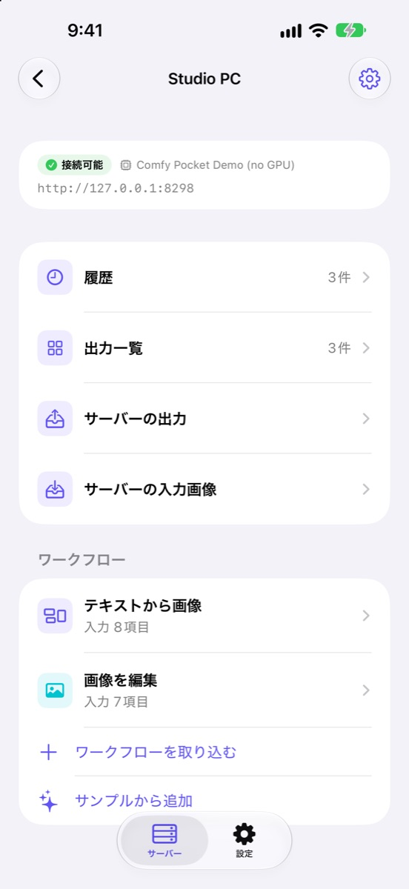
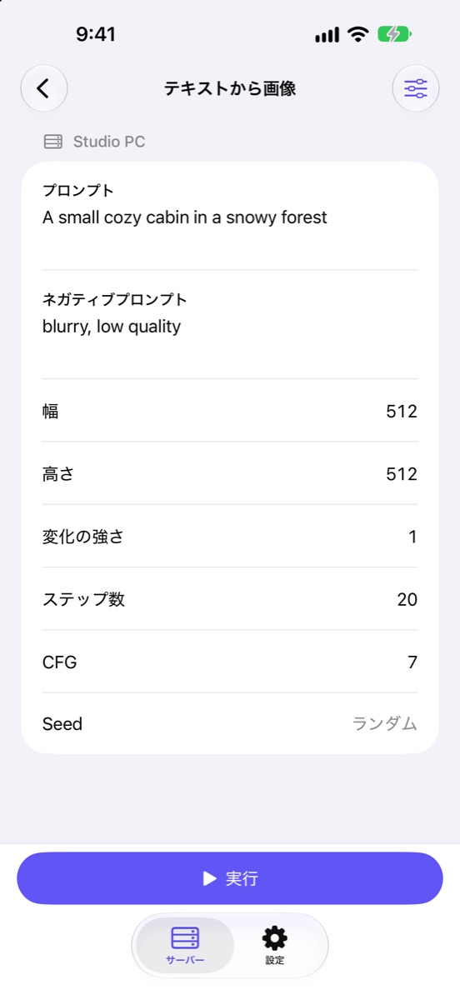
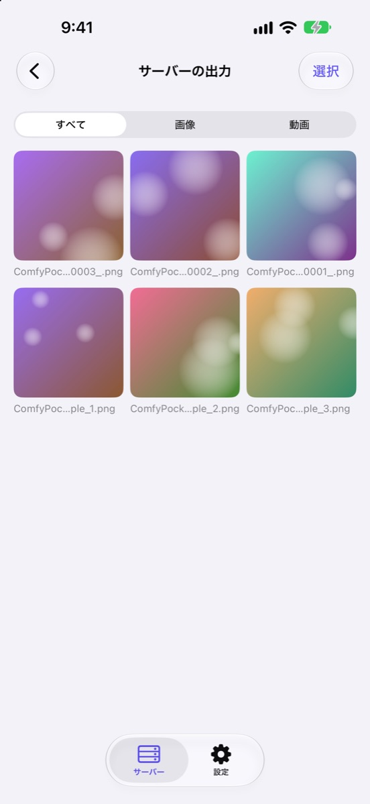
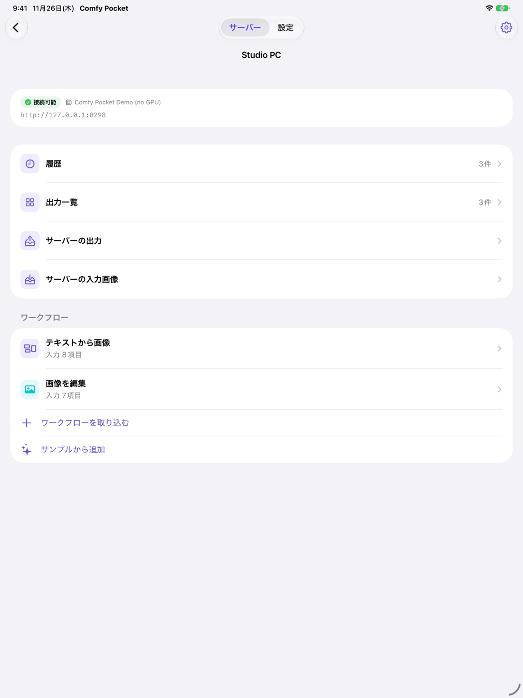
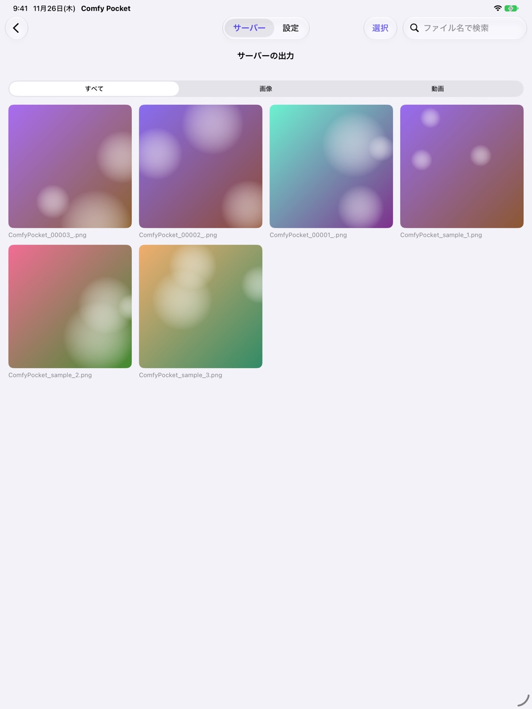
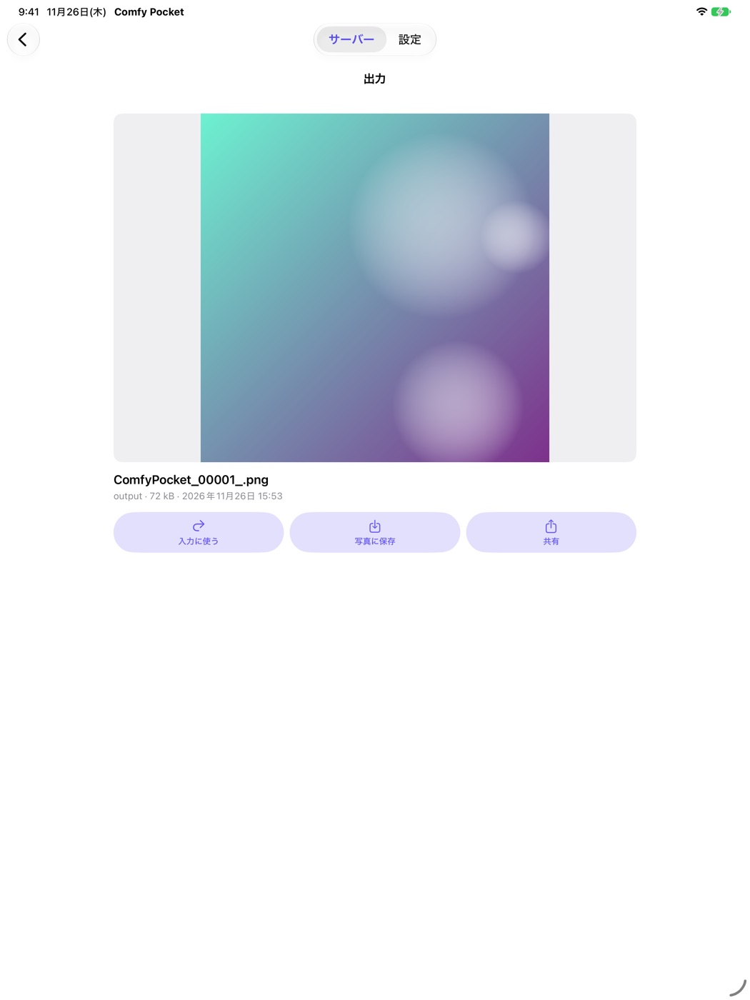

Comfy Pocket
Your own ComfyUI, from iPhone and iPad.
Comfy Pocket is a client app for the ComfyUI you run on your own PC or server. It builds input screens from the workflows you export from ComfyUI, so you can generate and edit images from anywhere by picking a photo and tapping Run.
Screenshots








Screenshots were taken with a demo server and show sample images. The app's interface is currently in Japanese.
Features
Input screens from your workflows
Import JSON from ComfyUI's “Export (API)” and the app creates fields for prompts, seeds, images and more. You can choose which fields to show and in what order.
Edit your photos
Pick input images from Photos, Files, or images already on the server.
Reuse results as input
“Use as input” passes a generated image straight to the image field of another workflow.
Tidy up your PC's output folder
Browse, save and share the server's outputs and input images. With the companion custom node, you can also delete them.
Multiple servers and locks
Add several ComfyUI servers, such as home and studio, and protect each one with a passcode.
No data collection
No account needed. Your inputs go straight to the servers you add, and the developer collects nothing.
Requirements
- A PC or server running ComfyUI (the app does not generate images by itself)
- A network path from your iPhone or iPad to that PC (the same Wi-Fi, a VPN such as Tailscale, or an HTTPS reverse proxy)
- iOS or iPadOS 17 or later
Comfy Pocket is an unofficial client for ComfyUI and is not affiliated with the ComfyUI developers.